|
Планетарные квесты
Текстовый квест - это живая книга, ее можно не только читать, но и влиять на события,
происходящие там. Часть квестов написана Союзом Независимых Квестописателей.
Квесты делятся на две группы: математические и атмосферные – текстовые. В математических
нужно решать поставленную задачу или логическую головоломку. В повествовательных
нужно окунуться в атмосферу жизни планеты и помочь каким-то образом персонажам.
 Если вы не смогли пройти квест, вновь хотите пройти понравившийся, или его вам не предложили в здании правительства, во время игры, то его можно пройти в любое время вне игрового процесса. В главном меню нажатием клавиши Q или специальной кнопкой, расположенной внизу, запускается окно со списком всех квестов. Выбрав квест (прим. название квестов в списке можно увидеть на этой странице), вы запускаете его и проходите. По окончании квеста, вы вернетесь в главное меню. Если вы не смогли пройти квест, вновь хотите пройти понравившийся, или его вам не предложили в здании правительства, во время игры, то его можно пройти в любое время вне игрового процесса. В главном меню нажатием клавиши Q или специальной кнопкой, расположенной внизу, запускается окно со списком всех квестов. Выбрав квест (прим. название квестов в списке можно увидеть на этой странице), вы запускаете его и проходите. По окончании квеста, вы вернетесь в главное меню.
Краткое описание всех квестов:
Примечание. Ярким цветом выделены новые квесты, разработанные специально для издания "Космические рейнджеры HD: Революция".
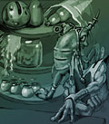 |
Амнезия
Жанр: бродилка-стрелялка
Сложность: выше средней
Длительность: выше средней
Ну, кто мог подумать, что на первый взгляд самое обычное задание от
добродушных гаальцев превратится в кровавый марафон с горами трупов
и горками трупиков? И это в промежутках между попытками вспомнить
свое прошлое и узнать свое будущее, ведь едва оказавшись на этой
планете, рейнджер получает по голове и становится обладателем
неутешительного диагноза — «амнезия». И вот
вместо выполнения правительственного задания (за которое гонорар уже
уплачен!) кажется грозный и вроде как рейнджер мечется по
незнакомому городу в поисках правых и виноватых, вознаграждая и тех,
и других по заслугам, причем большинство — посмертно. |
|
 |
Банкет
Жанр: логическо-познавательная игра
Сложность: средняя
Длительность: средняя
Что может быть сложнее, чем произвести хорошее впечатление на сурового малокского
принца? Произвести впечатление на его эксцентричную, по малокским меркам, разумеется,
жену. Ну, а если пытаться сделать это на торжественном банкете под прицелом телекамер
и бластеров телохранителей, то тут уж не до высокой политики – голову бы сберечь.
Обслуживать царственную чету на официальном приеме – это вам не безобидных доминаторов
изничтожать, эта опасная работа под силу только находчивому, бесстрашному и наглому
рейнджеру с высоким болевым порогом и атрофированным инстинктом самосохранения. |
|
 |
Бои минироботов
Жанр: тактический файтинг
Сложность: ниже средней
Длительность: средняя
Наверняка изобретатель этого опаснейшего вида спорта страдал острой доминаторофобией.
Ну, кому еще могла прийти в голову идея устроить смертельные поединки между боевыми
роботами, оснащенными новейшими средствами уничтожения? Впрочем, толпа всегда
требовала «хлеба и зрелищ», поэтому подобные чемпионаты пользуются большим успехом
у зрителей, а опытные пилоты боевых роботов – заслуженной популярностью. С тремя
такими противниками и предстоит сразиться рейнджеру на арене, чтобы получить вожделенный
приз. Но ведь для заслуженного истребителя доминаторов это не является проблемой?
|
|
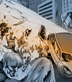 |
Бомбер
Жанр: логико-тактическая игра
Сложность: средняя
Длительность: средняя
Гонка вооружений до сих пор ведется среди рас Галактики – пусть даже в ней участвуют
лишь малоки. Теперь малокские генералы отказались от тактики «тотального уничтожения»
они предпочитают устрашение и полутотальное истребление, ведь на вооружение малокской
армии поступает новый высокоэффективный бомбардировщик, предназначенный для избирательного
воздействия на вероятностного противника. Осталась сущая безделица – испытать
новое оружие в деле. И, разумеется, доверить это дело можно только опытному, абсолютно
аморальному пилоту, которого не хватятся родственники, и чья гибель всех осчастливит
– рейнджеру. |
|
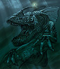 |
Борзухан
Жанр: бродилка с элементами аркады
Сложность: ниже средней
Длительность: ниже средней
Борьба с пиратством – почетный долг каждого законопослушного гражданина Галактики.
И вдвойне - незаконопослушного, ведь помимо завоевания славы они избавляются от
конкурентов. На широкие плечи рейнджера ложится почетная миссия – розыск и уничтожение
логова опаснейшего лякуши Борзухана. Гранаты – по карманам, завещание – нотариусу,
и можно отправляться в бой. Главное не забывать, что противостоят рейнджеру не
просто отмороженные головорезы, а организованные и обученные подразделения отмороженных
головорезов. К тому же, они сражаются на своей территории и за солидные гонорары. |
|
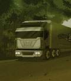 |
Водитель
Жанр: симулятор дальнобойщика
Сложность: средняя
Длительность: выше средней
Перевозить грузы и пассажиров, доставлять товары заказчикам и неприятности налетчикам
– все это дело привычное для каждого рейнджера. И пусть в руках не штурвал звездолета
и плазменная винтовка, а всего лишь баранка грузовика да старенький дробовичок
– даже сменив комбинезон пилота на потертую куртку дальнобойщика, рейнджер остается
рейнджером. Полные опасностей и неожиданных встреч трассы, общительные попутчики
и агрессивные представители местных банд ожидают водителя в мире, выжженном войной,
мире, где правит сила и деньги, а по разрушенным трассам между разбросанными уголками
цивилизации колесят повелители дорог - дальнобойщики. |
|
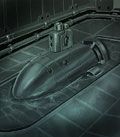 |
Водолаз
Жанр: бродилка
Сложность: средняя
Длительность: низкая
В космосе и воздухе, на суше и в воде… А теперь еще и под водой – куда только
не забрасывает судьба искателя приключений. Разумеется, ведь больше некому в нашей
необъятной Галактике спуститься на дно океана, выяснить причину гибели подводной
станции и остановить запуск ракет. Вот и приходится рейнджеру стаскивать летный
костюм и примерять на себя водолазное снаряжение. Блуждание наугад по затопленным
подводным лабиринтам, среди разлагающихся останков персонала станции – что может
быть увлекательнее? А совсем уж скучать не дает механизм самоуничтожения, отмеряющий
секунды жизни рейнджера… Тик-так, тик-так… |
|
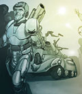 |
Военкомат
Жанр: менеджер военкомата
Сложность: средняя
Длительность: средняя
«Бороться - и искать, найти – и всех призвать» - эта поговорка станет вашим рабочим
лозунгом на этот раз. Ведь только всеми любимый и уважаемый рейнджер способен
помочь военкоматам выполнить план по призывникам. Почему-то патриотизм нынче не
в моде, и молодежь не хочет идти под снаряды доминаторов не то чтобы за идею,
но и даже за банку тушенки и два наряда вне очереди. Непорядок. Но теперь за дело
берется специалист, и каждый потенциальный призывник будет найден и призван, несмотря
на трехтомные справки, врожденный склероз и наследственную беременность, папу-президента
и скромную дату рождения 3200 год в паспорте… |
|
 |
Выборы
Жанр: симулятор предвыборной кампании
Сложность: низкая
Длительность: низкая
«По уши в политике» - вот как можно охарактеризовать новое задание. По крайней
мере таких поручений раньше рейнджеру действительно не приходилось выполнять.
Впрочем, для грозы доминаторов победить во всепланетных президентских выборах
– сущая безделица. Завоевать всенародную любовь? И не такое завоевывали… Обскакать
конкурентов? С перебитыми ногами далеко не ускачут… Пресс-конференции и встречи
с электоратом? Раздача автографов и блеск софитов для национального героя дело
привычное... Агитация избирателей? Кто со мной – тот герой, кто против меня тот…
спросите у доминаторов – они знают… |
|
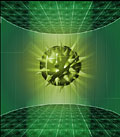 |
Гайд-Нет
Жанр: логическая головоломка
Сложность: высокая
Длительность: высокая
«Ну что, рейнджер, готов к перезагрузке? У нас здесь не какая-нибудь Матрица,
а самый что ни на есть Гайд-Нет, здесь мало уметь махать руками-ногами, здесь
еще и думать нужно… Надеюсь, ты пришел со своим жестким диском, и не забыл залить
на него HackSens? Или считаешь, что сервер ломается с помощью кувалды и малокской
матери? Что ж, загружай свои программы-эксплоиты и активизируй режим маскировки.
Надеюсь, навыки серфинга без использования стандартной навигационной оболочки
Гайд-Нета у тебя есть? Тогда вперед – на покорение киберпространства, и помни,
рейнджер, сторожевые программы не дремлют. Добро пожаловать в Сеть…» |
|
|
Главный редактор
Жанр: экономический симулятор
Сложность: высокая
Длительность: высокая
Эх, занесла же нелегкая в кресло редактора журнала об играх.
Это не доминаторов бить. Придется освоить все хитрости издательского бизнеса.
Тут пушкой не пригрозишь, к каждому подход нужен. А уж Совет цензоров сущая проблема,
то там мало написали, то картинки не очень. Вот и ломаешь голову кому дать на лапу. Да и с предпочтениями читателей тоже считаться надо, ведь то, что понравится одним, у других может вызвать непреодолимое желание убить главного редактора этого журнала.
Ну да ладно, в окружении дюжины доминаторов выживали, и здесь справимся. |
|
 |
Глубина
Жанр: логико-математическая игра
Сложность: высокая
Длительность: высокая
Наверняка большинство пилотов считает, что управлять мощным боевым звездолетом
гораздо сложнее, чем обычным подводным судном. Как бы не так! А чтобы развеять
последние сомнения, вам и предлагается немного «порулить» подобным аппаратом,
спустившись в глубины океана. Разыскать на дне странный объект, рухнувший в океан
из космоса? Да, легко! В условиях сложного рельефа океанического дна, в кромешной
тьме? Да, запросто! Маневрировать в окружении агрессивных подводных обитателей,
полагаясь при этом исключительно на парочку примитивных навигационных приборов
и свою интуицию? Где тут у вас выход? |
|
|
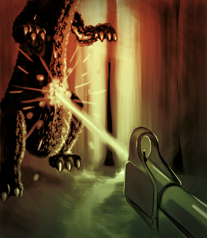
|
Глюки
Жанр: бродилка с элементами тихих ужасов
Сложность: средняя
Длительность: средняя
Есть одна не особо интересная работа, за которую вы вряд ли возьметесь, рейнджер. Это дело для рядовых сотрудников, а не для героя, широко известного во всей галактике. Если вы все-таки соскучились по рутине, то выясните, что случилось с одной экспедицией на другой планете в третьей системе.
По возвращении с отчетом о проделанной работе вы получите хорошую компенсацию на восстановление нервных клеток.
|
|
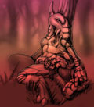 |
Гнездо пиратов
Жанр: бродилка с логическими головоломками
Сложность: выше средней
Длительность: выше средней
Откуда берутся самые крутые пираты в галактике? Конечно, из числа рейнджеров! Только эти благородные ребята обладают привилегией под видом государственной необходимости реквизировать добро частных лиц. А те, кто обязаны защищать этих торгашей, до поры до времени будут закрывать глаза на подобные вольности, словно рейнджеры и в самом деле бьют доминаторов контейнерами с едой или элитными винами. Не жизнь, а малина! И уж конечно, ни один рейнджер-пират не потерпит, чтобы кто-то еще претендовал на лидерство. Ради устранения наметившегося конкурента можно согласиться и на сделку со своей пиратской совестью - послужить правительству, дабы убрать возможное препятствие с Млечного пути! |
|
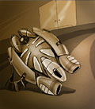 |
Джампер
Жанр: логическая головоломка
Сложность: высокая
Длительность: средняя
Интересно, если бы не было отважных рейнджеров, готовых рискнуть своей головой,
кто бы испытывал новейшие изобретения фэянских ученых? На этот раз рейнджеру действительно
придется рискнуть своей головой – в испытательной лаборатории потолки очень низкие,
а прыжки придется совершать очень высокие и длинные. По крайней мере, изобретатель
этого прыжкового ранца заверяет, что прыжки будут длинными и высокими. Ощущение
свободного полета – что может быть чудеснее? Разумеется, ощущение мягкой посадки
после этого полета. Не верите? Попробуйте сами, вам понравится! Главное – это
точный расчет дальности и координация. |
|

|
Диск
Жанр: доставка груза с элементами квеста
Сложность: средняя
Длительность: низкая
Для вас, рейнджер, есть одно срочное задание. Необходимо слетать на одну планету и привезти диск с важной информацией. Вас встретит в космопорте наш сотрудник, переодетый журналистом, который и передаст запечатанный пакет. Он назовет пароль, которым будет фраза: "Жареный перепеленок", на которую вы ответите "Недоперепеленок".
Если беретесь за это дело, то желаем успехов!
|
|
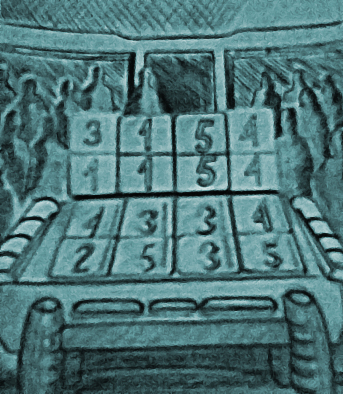
|
Доомино
Жанр: логическая игра
Сложность: средняя
Длительность: средняя
Вам, вероятно, известно, что малоки - очень спортивная раса. Недавно им стало известно, что скоро стартует первый открытый чемпионат галактики по доомино. Это исконно гаальская игра, и все чемпионаты раннее проводились исключительно среди гаальских планет. Теперь же чемпионат открытый и вам поручается поучаствовать в чемпионате и добыть на нем столь важную для малоков победу. В случае успеха вознаграждение гарантируется.
|
|
|
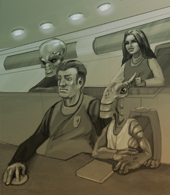
|
Живым или мертвым…
Жанр: бродилка с приключениями
Сложность: выше средней
Длительность: выше средней
Как вы смотрите на то, чтобы поучаствовать в вершении правосудия?
Дело в том, что на одной планете несколько месяцев назад произошёл весьма неприятный инцидент. Сущий пустяк - пара-тройка убийств. Теперь достопочтенный малок по имени Рокторнак, на которого повесили это дело, находится под арестом в ожидании суда. Разумеется, он невиновен, это всё сплошная политика.
Несмотря на предпринятые усилия, в том числе и по дипломатической линии, суд состоится. Без хорошего адвоката Рокторнак обречен, если конечно ему на помощь не придет грамотный защитник. Такой, как вы!
|
|
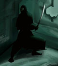 |
Злой гений
Жанр: стратегия с элементами файтинга
Сложность: выше средней
Длительность: высокая
Ну-ка, посмейтесь. Злее. Еще злее. Хорошо. Теперь примерьте этот монокль. Хорошо, вам очень идет. Я думаю, вы нам подходите. Для вас есть несложное, но деликатное задание: любой ценой захватить контроль над планетой. Одним словом, вы должны завоевать для нас мир! Бу-га-га-га! Рейнджер, зачем вы достали свой коммуникатор? Вызвать санитаров? Для кого? Они скорее заберут не нас, а вас! Как это за что? За то, что вы забыли, кто считается психически ненормальным на пеленгской планете. Передумали? Вот и славно! Советуем поторопиться - мировое господство, знаете ли, не терпит отлагательств... |
|
|
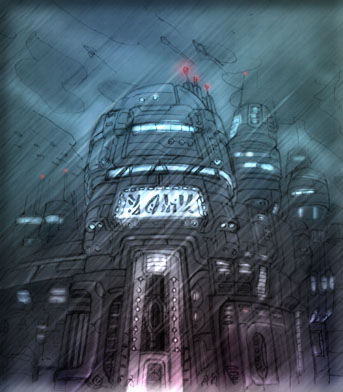
|
Киберразум
Жанр: бродилка с элементами ужасов
Сложность: выше средней
Длительность: высокая
Рейнджер, вы умеете работать с киберпространственными консолями? Если умеете, то можете получить заключить выгодный контракт на выполнение одного задания.
На одной из нашего рукава галактики существует урбанистическое государство, и на его территории работает независимая корпорация "Умбротек". Их эксперт по консолям на днях исчез при невыясненных обстоятельствах. Работа, над которой он трудился, не окончена, но чрезвычайно важна. Вам поручается разобраться в этом деле и, при необходимости, закончить работу пропавшего сотрудника.
|
|
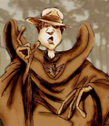 |
Колонизация
Жанр: экономический симулятор
Сложность: выше средней
Длительность: высокая
Как там у классика? "Через четыре года здесь будет город-сад". Рейнджеру дается только тридцать (30!!!) дней на то, чтобы полуразрушенное поселение колонистов превратить в ультрасовременный процветающий городок. Это прекрасная возможность показать себя не только военным стратегом, но и талантливым администратором. Только помните, что у каждого колониста есть свои желания и потребности, а Устава они не знают. Так что не рассчитывайте, что они вас будут слушаться так же, как слушаются своего сержанта малокские солдафоны в скафандрах с отключенной системой микроклимата, с песней нарезающие на плацу 1242 круг. |
|
|
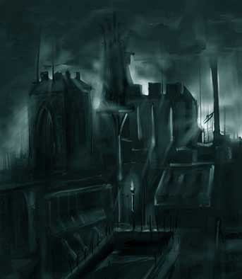
|
Комплекс
Жанр: детектив
Сложность: выше средней
Длительность: высокая
С планеты, где расположен рудовыкапывательный комплекс "Полноценность", стали приходить панические сообщения о странных событиях и не менее странных шныряющих по тёмным углам существах. Хозяева предприятия готовы за хорошее вознаграждение нанять отважного рейнджера для того, чтобы он разобрался в ситуации. Это необходимо сделать как можно быстрее, пока тревожная информация не распространилась за пределы комплекса.
|
|
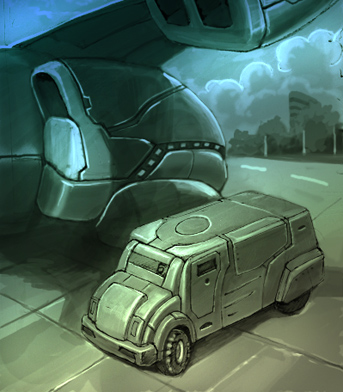
|
Космолинии
Жанр: экономическая стратегия
Сложность: средняя
Длительность: выше средней
Задание, задание... гм... где-то было, ах вот же оно. На этот раз все без подвоха. Вы должны помочь одному влиятельному бизнесмену в раскрутке компании "SpaceLines", которая занимается пассажироперевозками. Так что если сумма вознаграждения вас устраивает, срочно вылетайте на место событий и приступайте к делу!
|
|
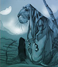 |
Ксенолог
Жанр: бродилка
Сложность: средняя
Длительность: средняя
Детектив, ученый-ксенолог, борец с доминаторами и повар первого разряда в одном
лице. Кто бы это мог быть? Разумеется, рейнджер, согласившийся выяснить, кто,
как и почему убил уже двух ученых-исследователей, да еще и таким зверским способом,
на одной из незаселенных планет. Круг подозреваемых не так уж широк: четыре человека,
точнее, гуманоида из обслуживающего персонала станции, да целое племя безобидных
аборигенов – акабосов, премилых созданий, обладающих разумом и застрявших в своем
развитии где-то на уровне каменного века. Однако задачу усложняет необходимость
сохранить хорошие отношения с аборигенами… |
|
| |
Ксенопарк
Жанр: логическая головоломка
Сложность: средняя
Длительность: низкая
Теперь нелегкая судьба и мечта о солидном гонораре вынуждают звездного скитальца
стать самым настоящим кормильцем и поильцем для полудесятка странных тварей, собранных
со всех уголков галактики. Задача в принципе несложная, если бы не одно обстоятельство
– мерзкий ручной шпецокляк, «любимчик» владельца ксенопарка, ухитрился поменять
местами таблички на клетках. Так что теперь понять кто из «зверушек» сидит в какой
клетке, и какой дрянью нужно кормить это страшилище, чтобы оно не отбросило когти/копыта/ласты/щупальца/труп
рейнджера (нужное подчеркнуть) – по силам только самому выдающемуся рейнджеру. |
|
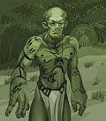 |
Лабиринт
Жанр: бродилка с логическими головоломками
Сложность: высокая
Длительность: высокая
Чтобы завоевать доверие загадочных вреллов, рейнджер должен пройти обряд посвящения
в воины, называемый «Спор Богов». В принципе, устроить бой пенчекряка с хвачиками
не так уж и сложно – хватай побольше да бросай подальше, а там они уже сами разберутся,
кто из них чей ужин. Однако, сначала еще нужно где-то раздобыть этих хвачиков.
А вот это и есть самая сложная часть миссии – блуждать в запутанном лабиринте
в поисках яиц хвачера не самое приятное времяпрепровождение. Даже если не учитывать,
что воздух здесь отравлен и каждую минуту можно наткнуться на кровожадного хвачера,
давненько не лакомившегося кандидатами в воины. |
|
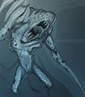 |
Легкая работа
Жанр: логические головоломки и
математические задачи
Сложность: высокая
Длительность: высокая
«Бесплатный сыр бывает только в мышеловке». А легкая работа обычно выливается
в тяжелые последствия, множественные травмы и финансовые потрясения для исполнителя,
то есть рейнджера. Казалось бы, совершенно пустяковое задание - отвезти посылку
заказчику. Но оно осложняется отсутствием заказчика, в поисках которого, рейнджер
оказывается впутанным в целую серию загадочных убийств и попадает в круговорот
мистических событий - таинственный культ, жертвоприношения, ужасные монстры и
прочие веселости. По ходу дела придется не раз пораскинуть мозгами, открывая различные
замки, подбирая пароли или выбирая бойцов в группу захвата. Захвата кого? А это
вы узнаете, если возьметесь выполнить эту совсем не легкую работу. |
|
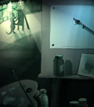 |
Леонардо да Винчи
Жанр: логический симулятор мольберта
Сложность: выше средней
Длительность: средняя
Чем палеомодернизм отличается от постимпрессионистического неоэкспрессионизма? Назовите размер самых известных полотен Ванома. Сколько картин насчитывает Язынинская галерея искусств? Если рейнджер догадался для ответа на данный вопрос воспользоваться личным компьютером, то значит, ему не составит труда от теории перейти к практике, заодно выиграв гран-при на конкурсе лучших художников галактики. Общеизвестно, что талантливый человек талантлив во всем. Следовательно, у настоящего рейнджера есть уникальный шанс подтвердить или опровергнуть эту истину на практике. |
|
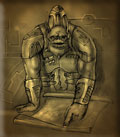 |
Логика
Жанр: логическая головоломка
Сложность: ниже средней
Длительность: низкая
Вы, наверно, знаете, что у малоков, как и у других рас, есть своя популярная логическая игра, которая называется "Барабум". Несмотря на то, что малокам по Уставу думать не положено, из каждого правила есть исключения. Ваша задача не только принять участие в ежегодном чемпионате по "Барабуму", но и выиграть его. Не самое трудное задание для такого умного рейнджера, как вы. Кстати, настоятельно советуем вам по прибытии на место воздержаться от сарказма, если планируете дожить до пенсии. |
|
 |
Лыжный курорт
Жанр: экономический симулятор
Сложность: ниже средней
Длительность: средняя
«Любишь кататься - люби и саночки возить» - так гласит древняя человеческая поговорка.
В данном случае, прежде чем прокатиться с ветерком по горнолыжной трассе, рейнджеру
предстоит сначала эту самую трассу отстроить. Несмотря на то, что это дело для
рейнджера обычное - кого-нибудь строить, все не так просто, ведь заказчику нужен
самый настоящий фешенебельный горнолыжный курорт, с ресторанами, гостиницами и
разнообразными трассами. Этот курорт должен привлекать посетителей и приносить
своему владельцу приличный доход. Так что, засучив рукава и напялив на себя пилотку
прораба, рейнджер приступает к работе. |
|
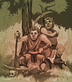 |
Мастер Иике-Бааны
Жанр: фэнтезийная ролевая игра
Сложность: высокая
Длительность: высокая
Каждый из нас хоть раз мечтал стать великим волшебником… Что значит «космонавтом»?
Мальчик, как тебя зовут? Юра Гагарин? Мальчик, брысь отсюда… Так вот - наши симуляторы
виртуальной реальности могут воплотить даже самые смелые мечты. Как насчет волшебного
мира, полного ужасных монстров, таинственных мест и древних артефактов? Мира,
где маги ведут бесконечные войны со скукой и друг с другом? Мир «Мастера Иике-Бааны»
именно то, что вам нужно. Там как раз наблюдается острая нехватка отважных героев,
способных бросить вызов Великому Магу и одолеть всех, кого не лень и на кого маны
не жалко, смельчаков, готовых сутками бродить по кладбищам и мрачным чащам в поисках
экспы и древних сокровищ… |
|
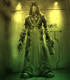 |
Мафия
Жанр: бродилка с приключениями
Сложность: высокая
Длительность: высокая
Когда представителей преступного мира становится больше, чем честных граждан, в обществе наступает хаос. Таково мнение Отдела Сдерживания Дзухаллага. К несчастью, на одной планете об этом забыли, что не замедлило пагубно отразиться на доходах от честной пиратской деятельности. Ведь теперь там количество тех, кто производит блага цивилизации, на порядок меньше, чем тех, кто их отбирает. Пора произвести сокращение штатов, чтобы стабилизировать ситуацию и вернуть все на круги своя: одни производят, другие отнимают, а Дзухаллаг - снова в прибыли. |
|
|
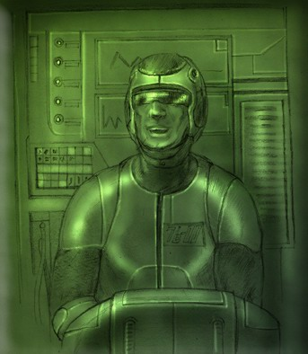
|
Мегатест
Жанр: викторина
Сложность: ниже средней
Длительность: ниже средней
Ага, для вас, рейнджер, есть задание. Старший научный сотрудник Дорд, пару лет назад отправился стажироваться на одну из рядовых планет галактики. Дела его на научном поприще шли достаточно хорошо: научные работы были удостоены почетных наград. Финальным испытанием для присвоения Дорду звания Галактического Академика стала разработка специальной системы тестирования знаний для выпускников вечерней школы рейнджеров. Оценка этой системы дала неоднозначные результаты: группа рейнджеров просто не смогла дать правильные ответы на вопросы этого тестирования. Вам поручается пройти этот тест, чтобы доказать его полезность в деле подготовки рейнджеров, а заодно помочь выдающемуся ученому современности получить заслуженную ученую степень.
|
|
 |
Министерство
Жанр: бродилка с логическими элементами
Сложность: низкая
Длительность: средняя
Вообще-то получить разрешение на аренду никому не нужного острова – не такая уж
сложная задача. Это если использовать всю мощь боевого звездолета и запрещенное
властями оружие. А если сделать это нужно официально, с соблюдением всех формальностей
и с подписанием всех необходимых бумаг, то задача становится просто невыполнимой.
По сравнению с неумолимой и безжалостной машиной под названием «бюрократия», доминаторы
– просто машинки для щекотки, детский игрушечный конструктор. Но рейнджер не боится
трудностей и смело бросается в бой против системы. Трепещите хранители типовых
бланков и повелители канцелярских печатей! |
|
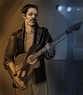 |
Музыкальный фестиваль
Жанр: бродилка с элементами менеджмента
Сложность: низкая
Длительность: средняя
Меломаны всех рас – объединяйтесь! Ударим роком по тунеядству и разгильдяйству,
ведь грядет ежегодный музыкальный фестиваль. Лучшие из лучших продемонстрируют
свое искусство терзания струн и извлечения звуков из странных приспособлений различной
конфигурации. Разумеется, ни один рейнджер не может спокойно пройти мимо такого
события. Так в чем дело? Сколотить за пару дней классную рок-группу и достойно
выступить на фестивале - это непростая задача даже для рейнджера, но ведь мы не
отступим? Доминаторов в клочья рвали, выжигали целые логова этих машин-убийц –
так неужели не порвем зал и не зажжем публику? |
|
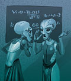 |
Наркотики
Жанр: бродилка с логическими головоломками
Сложность: высокая
Длительность: высокая
Наверное, нелегкая работа рейнджера накладывает особый отпечаток на внешность
– этакий наивно-простоватый лопух. Похоже, именно такое впечатление создается
у окружающих, которые стремятся использовать гордого воителя в своих низменных
целях. Как бы не так! Рейнджер никогда не согласится плясать под чужую дудку,
по крайней мере, за такие жалкие гонорары! Так что срочно приходится брать дело
в свои руки. Находясь в плену или просто в плохом настроении, рейнджер способен
таких дров наломать – Гринпис удавится полным составом. Нет такого заговора, который
он не смог бы разгрызть, и ореха, который он не смог бы раскрыть… |
|
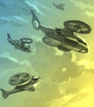 |
Община свидетелей доминатора
Жанр: бродилка с приключениями
Сложность: высокая
Длительность: высокая
Как известно, на детях гениев природа отдыхает. Насколько же были талантливы родители этих несчастных, чтобы природа так хорошо на них отдохнула? Сектанты из "Общины свидетелей доминатора" убеждены, что машинный разум является следующей ступенью эволюции мысли и духа. Они твердо намерены защитить бедных доминаторов от сил Коалиции. И ладно бы "свидетели" просто устраивали какие-нибудь демонстрации протеста. Но сектанты намереваются защищать своих "стальных братьев" с оружием в руках, и уже вынашивают планы захвата Галактики... Нет, так дело не пойдет! Нужно срочно вправить мозги этим несчастным, чтобы подобная ерунда больше никогда не посещала чьи-либо головы. |
|
 |
Олимпиада
Жанр: логическая игра с элементами
менеджмента
Сложность: высокая
Длительность: высокая
Энциклопедика, иике-баана, шмякуш, энерголепка, обманки, воздуходубины, киборгодром
– вам о чем-нибудь говорят эти названия? А, кроме того, что стоит показаться к
психиатру? Нет? Как все запущено… Между прочим, это лишь часть обязательной программы
олимпиады среди клерков – одного из самых популярных спортивно-интеллектуальных
мероприятий. Пожалуй, вам стоит посетить это зрелище и даже принять в нем участие.
Разумеется, состязаться с опытными соперниками вам не по плечу, а вот стать тренером
сборной планеты-заказчика – это будет самое то для рейнджера. И без призового
кубка даже мечтать не смейте о гонораре… |
|
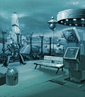 |
Парк аттракционов
Жанр: бродилка с логическими головоломками
Сложность: выше средней
Длительность: выше средней
Наверное, каждый в детстве мечтал попасть в сказку. И вот рейнджеру выпадает уникальный
шанс воплотить свою детскую мечту. Причем конкретно так попасть, по самое место,
где спина меняет свое название. Не важно, что чудеса здесь – это чудеса пиротехники,
а сказочные персонажи – шедевры кибернетики. Детский парк сказочных аттракционов
не просто выходит из-под контроля, а становится настоящим кошмаром, где выжить
может только самый подготовленный и бесстрашный рейнджер. Спасти принцессу-андроида,
одолеть кибернетического Змея-Горыныча и ответить на загадки свихнувшегося компьютера
– это не каждому под силу. |
|
 |
Пачвараш
Жанр: симулятор жизни животного
Сложность: выше средней
Длительность: выше средней
Вы никогда не задумывались насчет того, чтобы сменить пол? А ведь придется! Правда,
не сменить пол, а всего лишь получить разрешение Священного Лякушатника на смену
пола. И не для себя, а для президента одной из планет – надоело ей быть женского
пола… Для пеленгов это вполне обычное желание, у них смена пола не требует особого
вмешательства. Поэтому на смену пола был наложен запрет, и без разрешения эта
процедура считается нарушением пеленгских законов. Так что придется рейнджеру
вселиться в шкуру пачвараша, обжить ближайшую нору на землях племени и добыть
в борьбе за выживание чертово разрешение. В самом прямом смысле. |
|
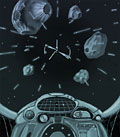 |
Пилот
Жанр: бродилка с логико-математическими
головоломками
Сложность: низкая
Длительность: средняя
Ну, разве могло прийти в голову опытнейшему пилоту боевого звездолета, занимающего
не последние строки в рейтинге рейнджеров и избороздившего космические просторы
вдоль и поперек, что сдать обычные экзамены на права управления грузовым звездолетом
будет так сложно? А ведь придется тряхнуть стариной, чтобы отработать гонорар.
Стоит ли селить капитана поближе к каюте стюардесс? Сколько стоит билет в одну
сторону хоть куда-нибудь? Где можно что-нибудь купить, чтобы потом это продать?
Почему у экзаменатора печальный вид, а у рейнджера в листе не менее печальные
оценки? Вперед – к знаниям, рейнджер! |
|
 |
Пицца
Жанр: логико-математическая игра
Сложность: средняя
Длительность: средняя
На этот раз рейнджеру предстоит принять участие в самом вкусном чемпионате Галактики.
А именно – в чемпионате по приготовлению пиццы. Если вы считаете, что судьи просто
слопают по кусочку приготовленной пиццы и вынесут вердикт, то вы не правы. Приготовление
пиццы – настоящее искусство, и оцениваться должно соответствующе. Калорийность,
экзотичность, эстетичность – все это будет влиять на мнение жюри, поэтому ваш
шедевр будет осмотрен, обнюхан облизан и общипан вдоль и поперек судьями различных
рас. А ведь у каждой расы свои представления об идеальной пицце, и это тоже нужно
учесть, если хотите добиться победы… |
|
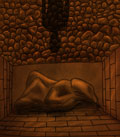 |
Плохой день Рейнджера
Жанр: бродилка с элементами файтинга
Сложность: средняя
Длительность: средняя
Лети туда, не знаю куда. Сделай то, пока неизвестно что. Неизвестно, но интересно, а главное - прибыльно. У компании "Невитс и Гник" возникли серьезные проблемы с их... хм... скажем так, проектом. Проект, понятное дело, секретный. Причем секретный настолько, что даже представитель правительства, который выдает задание, ничего не знает. Странно, не правда ли? Но настоящий рейнджер готов к любым сюрпризам, верно? |
|
|
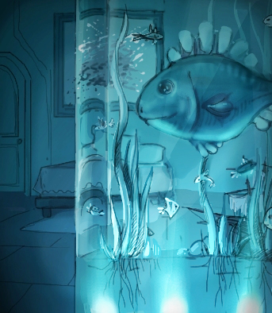
|
Подстава
Жанр: юмористический детектив
Сложность: средняя
Длительность: средняя
Как вам известно, мир политики - это жестокое сборище хищников, каждый из которых стремится сожрать конкурентов, чтобы добиться успеха. Скоро в одной звездной системе пройдут выборы и у одного из кандидатов готова очень хорошая пиар кампания.
Необходимо очернить этого «самовыдвиженца» так, чтобы он вовек не отмылся! Нужно подбросить в квартиру этого типа определенный компромат, чтобы его обнаружили при случайном обыске. Как говорится, просто, тупо, грязно, но действенно.
Итак, если вы согласны за солидное вознаграждение послужить действующей власти, то стартуйте как можно скорее. По прибытии на место вас встретит мой ассистент, который выдаст вам все необходимое и подскажет, как проникнуть в нужное жилье.
|
|
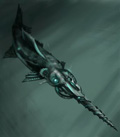 |
Потерянный герой
Жанр: бродилка с приключениями
Сложность: выше средней
Длительность: средняя
Если рейнджер хочет рискнуть жизнью ради солидного гонорара, то правительство планет всегда готово решить свои проблемы чужими руками. И это неважно, что герой может погибнуть. Ведь страховку в 10000 оплачивает Галактический Совет. Но ближе к делу. В последнее время на одной планете участились диверсии с применением животных-мутантов. Путем расследования было установлено, что источник их появления - маленькая необитаемая планета, где во время клисанской войны располагалась небольшая военная база. Рейнджеру предлагается принять участие во второй разведывательной миссии, так как первая с задания не вернулась.
|
|
|
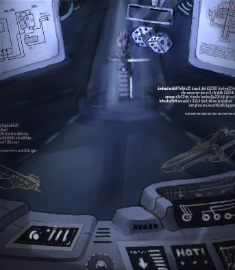
|
Провода
Жанр: логико-математическая игра
Сложность: средняя
Длительность: ниже средней
У научной экспедиции на одном из необитаемых миров возникли какие-то сложности с электричеством. Очевидно, что проблемы весьма серьезные, так как от исследователей планеты уже который день приходят тревожные сообщения с легким налетом истерии. Поскольку мощность сигнала невелика, полный текст сообщения получить не удалось.
Если вы, рейнджер, сейчас свободны и хотите заработать, то слетайте на место событий туда и разберитесь, что к чему. На все про все у вас определенное количество дней. Почему-то именно эту цифру до какого-то часа "Жо" назвали сотрудники научной экспедиции в своем последнем, более-менее разборчивом сообщении.
|
|
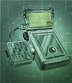 |
Проигрыватель
Жанр: логическая игра
Сложность: средняя
Длительность: низкая
Наверняка, получая очередное задание на изучение или починку какого-нибудь древнего
прибора или артефакта, вы задираете нос, считая это приглашение лучшей оценкой
ваших познаний в древних технологиях? Спуститесь с небес на землю! Просто в случае
неудачи неисправность можно будет свалить на неуклюжего рейнджера, а при летальном
исходе и плакать никто не станет, просто наймут другого. На этот раз в руки рейнджеру
попадает старинный проигрыватель DND-дисков, который нуждается в настройке. Естественно,
видеть раньше подобное вам не приходилось, но ведь от этого еще интереснее поковыряться
в странном приборе! |
|
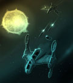 |
Пропролог
Жанр: симулятор "Космических рейнджеров"
Сложность: высокая
Длительность: выше средней
Институту Истории Освоения Космоса нужен смерт… то есть доброволец для одного опасного, но очень интересного эксперимента, связанного с путешествиями во времени, для изучения истоков рейнджерского движения. Тот, кто решится на выполнение этого задания, не только окажет услугу Галактическому Совету, который и финансирует данное мероприятие, но и первым среди ныне живущих проникнет в тайну войны с ботами, которая разразилась в конце XXII века. |
|
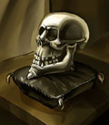 |
Пятнашка
Жанр: логическая головоломка
Сложность: выше средней
Длительность: выше средней
На малокских планетах власть от одного руководителя к другому передается во время Церемонии Коронации Великого Малокрха. В этот день, который на всей планете объявляется праздничным, новый Хранитель должен произнести клятву на черепе Первого Великого Малокрха Раммора Заккарадского. Эта реликвия хранится в сейфе, способ открытия которого передавался от одного Хранителя к другому. Но в результате недавнего убийства прежнего Малокрха, секрет оказался утерян. Интересно, о чем они думали раньше? Хотя, как известно, малокздрав предупреждает, что лишние мыслительные нагрузки влияют на репродуктивную деятельность и здоровье в целом.
Помогите братьям по разуму. Как говорится, сегодня мы им, завтра - они нам. |
|
|
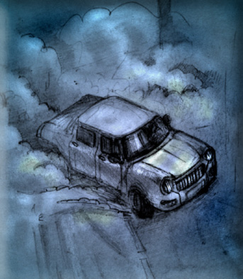
|
Ралли
Жанр: гоночный симулятор с элементами менеджмента
Сложность: выше средней
Длительность: средняя
Что вы знаете про гонки олдсмобилей? Это такие транспортные средства без антиграва и на четырех колесах. Вы не поверите, но они двигаются под действием горячего газа высокого давления в двигателе, эта технология отмерла еще в 22-м веке. Как ни странно, гонки на этих развалюхах все еще популярны, и даже гаальцы и фэяне с удовольствием за ними наблюдают.
Не хотите ли представлять одну из команд на ежегодном чемпионате, который скоро начнется на одной из ближайших планет? Нет, нет, садиться в эти страшные "капсулы смерти" не придется, Вы будете начальником отдела эксплуатации, отдела подготовки пилотов, финотдела...
|
|
 |
Сварокок
Жанр: тактическая игра
Сложность: ниже средней
Длительность: средняя
К малокской медицине с уважением относятся даже гаальцы, признанные специалисты
в области исцелении тела и разума. А вот малоки с уважением относятся только к
опытным воинам и умелым охотникам, поэтому ради получения ценного препарата, рейнджеру
предстоит самому поохотится на опасных сварококов, из лапок, которых изготавливается
лекарство. Это единственное условие, поставленное малоками. Поэтому, взяв в руки
нож, дубину и свою выдержку, рейнджер отправляется на охоту. Главное, это доходчиво
и быстро объяснить свирепому хищнику, кто же из них двоих является жертвой, а
кто – охотником. |
|
 |
Сортировка
Жанр: аркадно-логическая игра
Сложность: ниже средней
Длительность: средняя
Какой же рейнджер не мечтал в детстве о настоящей грузопассажирской гравидороге! Гравипоезда и тягачи, сортировочные станции и ремонтные мастерские, а во главе всего этого великолепия - великий диспетчер. И вот мечты сбываются! Пеленгской военной базе требуется новый главный сортировщик для нормализации хозяйственной обстановки перед важным межпланетным… Хм… "мероприятием". Такая уникальная возможность порулить настоящей гравидорогой предоставляется не каждый день. Поэтому запомните главное: если взялся за работу, то доведи ее до конца и не забудь получить гонорар. |
|
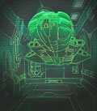 |
Стелс
Жанр: бродилка-стрелялка
Сложность: средняя
Длительность: ниже средней
Кто сказал, что красть чужие военные разработки аморально? Вероятно, те, у которых подобных секретов пруд пруди, а делиться с союзниками по Коалиции военными секретами они не хотят. И напрасно. Если бы эти грязные политиканы не чинили препятствий, то война с доминаторами давно закончилась бы нашей общей победой! Надо всего лишь угнать корабль-невидимку с секретной пеленгской базы, и борьба против общего врага получит новый импульс, благодаря тому, что новейшее вооружение смогут выпускать и другие расы. |
|
|
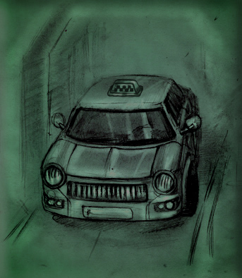
|
Таксист
Жанр: симулятор таксиста
Сложность: средняя
Длительность: средняя
На этот раз, рейнджер, для вас есть кое-что особенное. Известно, что вы занимались историей человеческой расы. В частности, много времени уделяли механизмам, способным перемещаться под действием энергии, создаваемой сгоранием жидкого топлива. Их раньше называли автомобилями. Крайне неэкологично и неэффективно. Но что поделаешь, такими дикарями были эти предки современных людей!
Если вы согласитесь на это очень, уверяю вас, интересное и эксклюзивное задание, то в качестве награды получите крупное вознаграждение. Ну, согласны?
Что? в чём состоит ваше задание? Да это не так уж важно, все инструкции вы получите на месте. Главное, что вы умеете управлять автомобилями. Подумайте лучше о сумме вознаграждения!
|
|
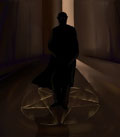 |
Тестинг
Жанр: бродилка с элементами файтинга и головоломками
Сложность: выше средней
Длительность: высокая
Ну почему, когда нужен доброволец для тестирования новой компьютерной игры, обязательно надо отвлекать рейнджера с поля боя? И неважно, что игру разработала знаменитая компания "Elementar Games". И уж совсем неважно, что за выполнение этого ответственного спецзадания заказчик готов заплатить… То есть как это неважно? Наоборот! В благородном деле мелочей не бывает, особенно когда настоящий рейнджер участвует в разработке игры про то, как можно стать настоящим рейнджером! А Келлеры, Терроны и Блазеры подождут… |
|
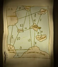 |
Туристы
Жанр: бродилка с логическими головоломками
Сложность: средняя
Длительность: средняя
Название в списке квестов: tourists
Надоело воевать или торговать? У вас есть уникальная возможность сменить сменить вид деятельности! Одной планете требуется опытный гид-проводник, чтобы провести экскурсию для высокопоставленных туристов. Это уникальная возможность для рейнджера завести полезные знакомства. Ведь война не будет длиться вечно. Кроме того, от вас будет зависеть, насколько светлым окажется экономическое будущее планеты. Достойное задание для достойного рейнджера, не правда ли? |
|
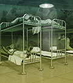 |
Тюрьма
Жанр: атмосферно-логическая игра
Сложность: средняя
Длительность: средняя
Только у нас вы сможете совместить физический труд с комфортным отдыхом! В вашем
распоряжении душевые (воду приносить с собой), ипподромы (тараканьи), массажные
салоны (не дразните охранников!), прогулки на свежем воздухе (в пределах дворика)
и даже библиотека со спортзалом. Завтраки, обеды, а если повезет, то и ужины в
столовой! К вашим услугам лучшие врачи и опытные садисты. Общение с интересными
и авторитетными людьми, по выходным - конкурсы самодеятельности (в другое время
самодеятельность наказуема) и даже интеллектуальные игры (на деньги). От нас вы
уйдете совершенно другим человеком, пеленгом, малоком, фэянином или гаальцем!
Посещайте наши исправительные учреждения, и вам все зачтется! |
|

|
Ухоногий сиболусовт
Жанр: бродилка с элементами черного юмора
Сложность: высокая
Длительность: высокая
Пока вы занимались своими делами, для вас, рейнджер, в научном отделе небольшое задание нарисовалось. Одна из многочисленных Экспедиций археологов как всегда влипла в неприятности и им срочно нужна помощь.
Несколько дней назад от них перестали поступать данные, а вчера связь заработала, и один из членов экспедиции вышел на связь. Он сообщил, что пока он находился в длительном походе в лесу, на базе произошли странные вещи, и все его коллеги пропали, включая даже роботов. Поэтому поскорее подписывайте контракт и летите спасать бедную экспедицию!
|
|
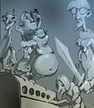 |
Фараон
Жанр: текстово-логическая головоломка
Сложность: низкая
Длительность: низкая
Вы обожаете памятники древности? Для вас нет ничего увлекательнее, чем разгадать
парочку древних тайн и разыскать сокровища погибшей цивилизации, да еще и за солидный
гонорар? Тогда мы идем к вам! Точнее, вы летите к нам. У нас, как раз, есть в
наличии прекрасно сохранившаяся пирамида древнеугупетских фараонов. А к ней в
нагрузку прилагается древний манускрипт с таинственным текстом. Если верить археологу,
считающему, что ему удалось раскрыть тайны древних угуптян, именно этот манускрипт
содержит ключ к гробнице и ее сокровищам. Вот только что ж он умный такой сам
в эту пирамиду лезть боится, а? |
|
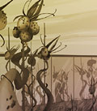 |
Фарюки
Жанр: логико-математическая головоломка
Сложность: выше средней
Длительность: средняя
Наверное, рейнджеру, взявшемуся за транспортировку редких фруктов, и в голову
не могло прийти, как дурно это дело пахнет. Еще бы! Из-за своеобразного «аромата»
этих фруктов, находиться на территории фермы без противогаза просто опасно для
жизни. А ведь нужно еще каким-то образом пронести через охраняемую проходную несколько
этих фруктов, не вызвав подозрений. Рентгены, обыск, теплосенсоры – вся эта мудреная
техника здесь не нужна, ведь обнаружить припрятанные фарюки очень просто – достаточно…
понюхать. Так что поломать голову придется – не может быть, чтобы в системе защиты
не нашлась крохотная лазейка… |
|
|
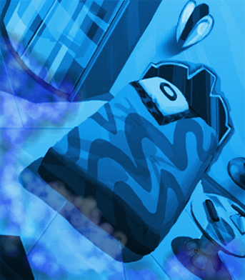
|
Филиал
Жанр: бродилка с приключениями
Сложность: выше средней
Длительность: выше средней
Корпорация "Гай Накс", которая занимается производством особого вида анимации, сейчас переживает нелегкие времена. Возможно, это следствие нашествия доминаторов, хотя вполне может быть, что продукция компании уже не так хороша, как была раньше. В любом случае от вас, рейнджер, требуется только одно: забрать важные документы у директора одного из филиалов корпорации. Если быстро обернетесь, то получите хорошее вознаграждение.
|
|
 |
Фонсеры
Жанр: гоночный симулятор
Сложность: ниже средней
Длительность: средняя
Вам нравится, когда за вами по пятам следуют разгоряченные… Да нет, не пираты,
и уж тем более не военная полиция или таможня. Разгоряченные соперники, пытающиеся
догнать лидера чемпионата – то есть вас. Если да, то добро пожаловать на ежегодную
гонку на фонсерах. Трассы повышенной сложности, сверхскоростные фонсеры, мчащиеся
быстрее метеора, захватывающие дух виражи и здоровое соперничество – что еще нужно
гонщику для счастья? Разумеется, победа! Только безоговорочная победа сможет доказать
всем и вся, что рейнджеры – это вам не то, чтобы да, это вам еще ого как… вот
так вот… |
|
|
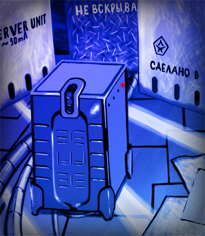
|
Форум
Жанр: бродилка с приключениями
Сложность: средняя
Длительность: средняя
С давних времен между правительствами передовых планет Коалиции заключен договор о совместных научно-исследовательских проектах. Для координации великих умов галактики мы используем форум на квазинейронном сверхсервере. Это очень мощная и дорогая игрушка, но используется она исключительно во благо всех! К тому же, технологию сверхсерверов на основе квази... того, о чем только что сейчас говорили, разработали в рамках проекта совместных исследований!
Все было хорошо до недавнего времени, когда форум оказался просто недоступен. Вся наука Коалиции только на нас и держалась, и начало ее упадка вы уже сейчас можете наблюдать. Давно уже никаких новых технологий не появлялось для борьбы с доминаторами, верно?
Рейнджер, вы понимаете все масштабы трагедии?! Вам доверяется восстановить работоспособность форума и, как следствие, науки Альянса.
|
|
|
Фоторобот
Жанр: симулятор составления фоторобота
Сложность: средняя
Длительность: ниже средней
Бытует мнение, что завалить в одиночку доминаторского эквентора проще, чем заключить эксклюзивный контракт с какой-нибудь фэянской компанией. И что рейнджеры способны только тупо воевать, да посылки возить, а не заниматься такой высокоинтеллектуальной деятельностью, каким считается крупный бизнес. На одной фэянской планете корпорация "Эсэн и Ко" разработала новый вид оружия - "Ксетвоизлучатель" - и планирует в скором времени провести тендер между планетами на получение патента на производство ксетвоизлучателей. Пришло время доказать, что рейнджеры отличные бизнесмены и дипломаты! Но помните, что в жестоком мире больших денег важно не только сорвать куш, но и суметь унести его. |
|
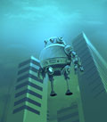 |
Фэянская психушка
Жанр: бродилка с логическими головоломками
Сложность: средняя
Длительность: ниже средней
Как говаривал В. Долбановский-средний: загремели в фэянский дурдом? Значит вы - гений! Не знаем, какое открытие совершил пеленгский спецагент, но его подозрительно быстро упрятали в психушку, вместе с важной информацией о новых нейроинтерференционных средствах фэян. Учитывая тяжелые условия, в которых придется работать, операцию по изъятию добытых данных можно поручить только рейнджеру, обладающему незаурядным актерским талантом и крепкими нервами, или гениальному настолько, чтобы ни у кого не осталось сомнений в том, куда его надо направить. |
|
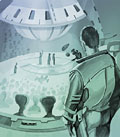 |
Цитадели
Жанр: тактическая стратегия
Сложность: средняя
Длительность: средняя
Интеллектуальные игры не так популярны, как более зрелищные мероприятия, и становятся
уделом узкого круга ценителей. Но «Цитадели» - исключение, ведь это интеллектуально-голографическая игра. То есть все ходы ее участников отображаются в виде объемных роликов, с роскошными спецэффектами и демонстрирующие последние достижения в области проекционных технологий. Мало какое состязание сможет сравняться с «Цитаделями» в зрелищности. Впрочем, в сложности и увлекательности тоже. Существуют сотни разнообразных тактик игры и не меньше конфигураций кубов, основанных как на точном математическом расчете, так и на чистом везении. Какую из них выбрать или создать свою, уникальную – зависит только от вас. |
|
|
Чемпионат по рыбалке
Жанр: симулятор рыбалки
Сложность: ниже средней
Длительность: средняя
У людей и пеленгов есть одно древнее любимое развлечение - рыбалка! Оно зародилось очень давно, но никто не знает, где его корни. Ходят слухи, что первыми рыбачить стали люди на планете Земля более трех тысяч лет назад, это занятие являлось их источником пропитания, а не развлечением. Однако фэянские ученые считают, что эта теория ошибочна, так как она беспочвенна и нелогична. Рейнджеру предлагается выступить в качестве представителя одной из планет на девяносто шестом чемпионате по ловле рыбы, дабы прервать гегемонию великого пеленга-рыболова по прозвищу "Стервятник", который победил до этого в пяти чемпионатах подряд, и своей победой возродить интерес к этому виду спорта. |
|
 |
Шашки
Жанр: математическая головоломка
Сложность: средняя
Длительность: низкая
Считается, что эта игра зародилась тысячи лет назад на одной из человеческих планет.
Так ли это, неизвестно, но популярность Гиперпрыгающих Плазмошашек среди людей
особенно велика. Впрочем, гаальцы считают эту игру слишком простой и предпочитают
играть в иике-баану, пеленги отказываются играть в игры, в которых принципиально
невозможно жульничать, а малокам вообще по Уставу думать не положено. И, разумеется,
когда команда плазмошашечников одной из планет попадает катастрофу, только рейнджер
способен заменить отлично подготовленную группу специалистов по этой игре – даже
если он впервые слышит о ее существовании. |
|
|
Эдельвейс
Жанр: бродилка с приключениями
Сложность: ниже средней
Длительность: средняя
С новой научной базой нет постоянной связи из-за непрекращающихся песчаных бурь, вызванных повышенной активностью звезды. Рейнджеру поручено установить на необитаемой планете радиопередающий комплекс "Эдельвейс". Эта мощная установка призвана наладить радиосвязь с орбитальным гиперпередатчиком. Задание изначально кажется простым, если, конечно, не учитывать то обстоятельство, что ваш предшественник - инженер экспедиции, погиб при невыясненных обстоятельствах... |
|
|
Элус
Жанр: логическая головоломка
Сложность: высокая
Длительность: средняя
Пока гаальцы часами размышляют над своими глубокомысленными и философски обоснованными
иике-баанами, фэяне упражняют свои высокоразвитые мозги, играя в Элус. Если коротко,
то это логическая игра. Если чуть подробнее – то это прекрасная возможность проверить
свою логику, интуицию и отношение госпожи Удачи к своей скромной персоне. Победителей
чемпионатов в Элус награждают пожизненным титулом элуни. Зная об отношении фэян
к умственным ценностям, это многое говорит о самой игре. Рейнджеру выпадает прекрасная
возможность проверить свои умственные способности, приняв участие в чемпионате. |
|